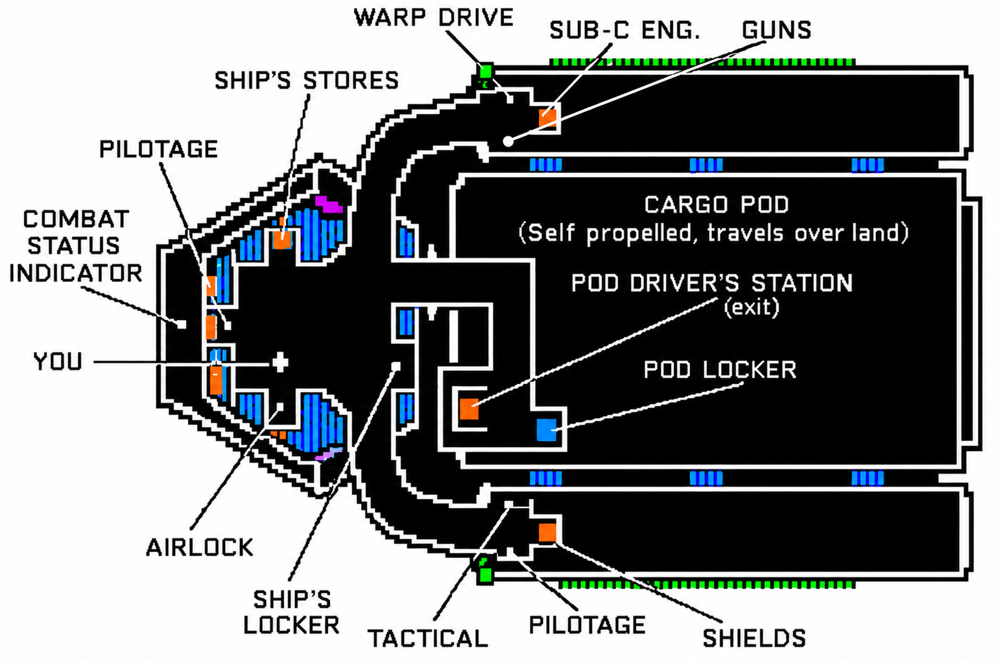
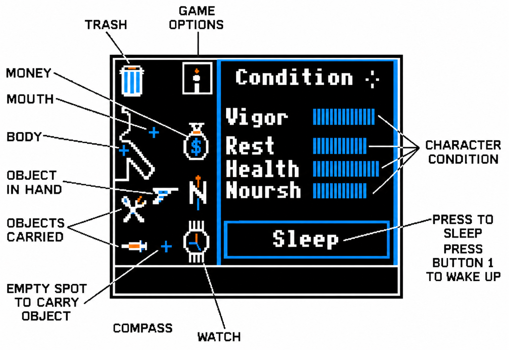
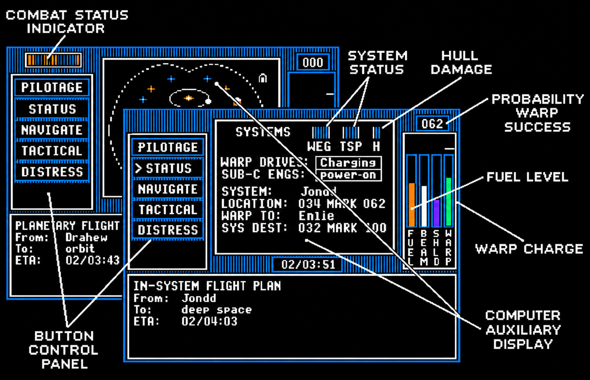
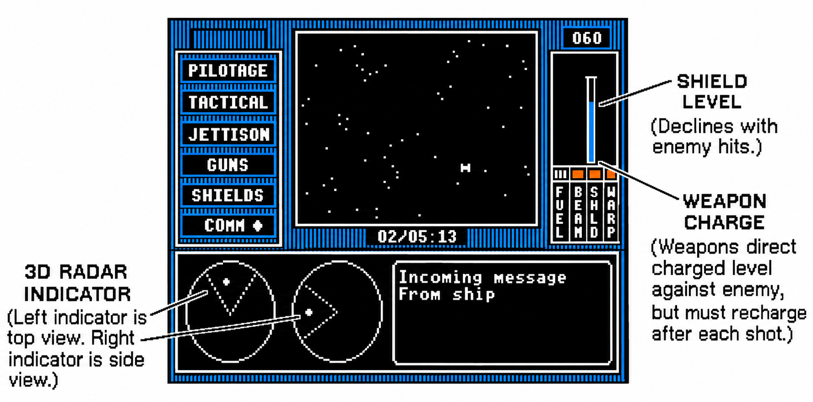
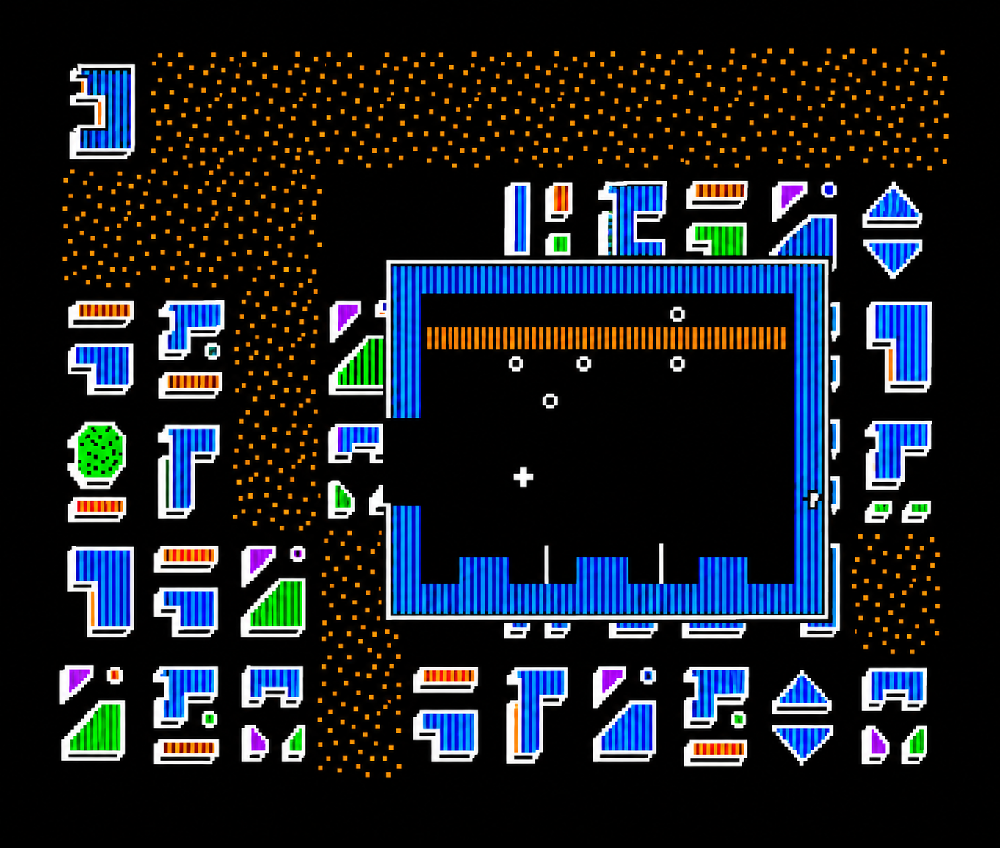
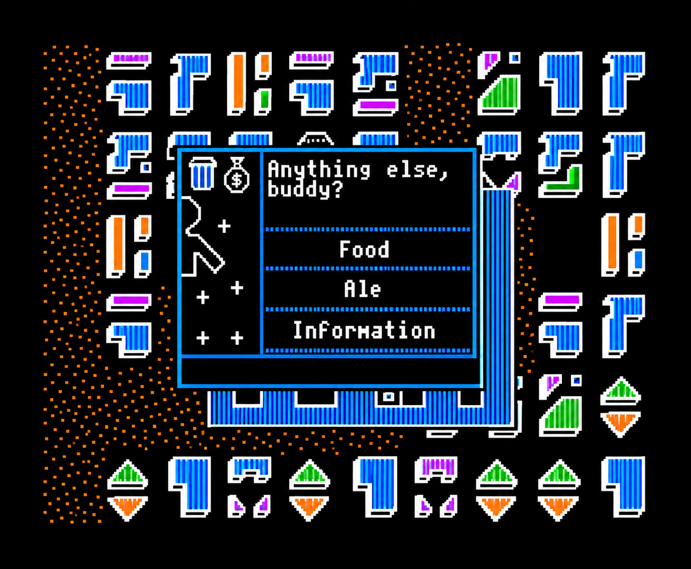
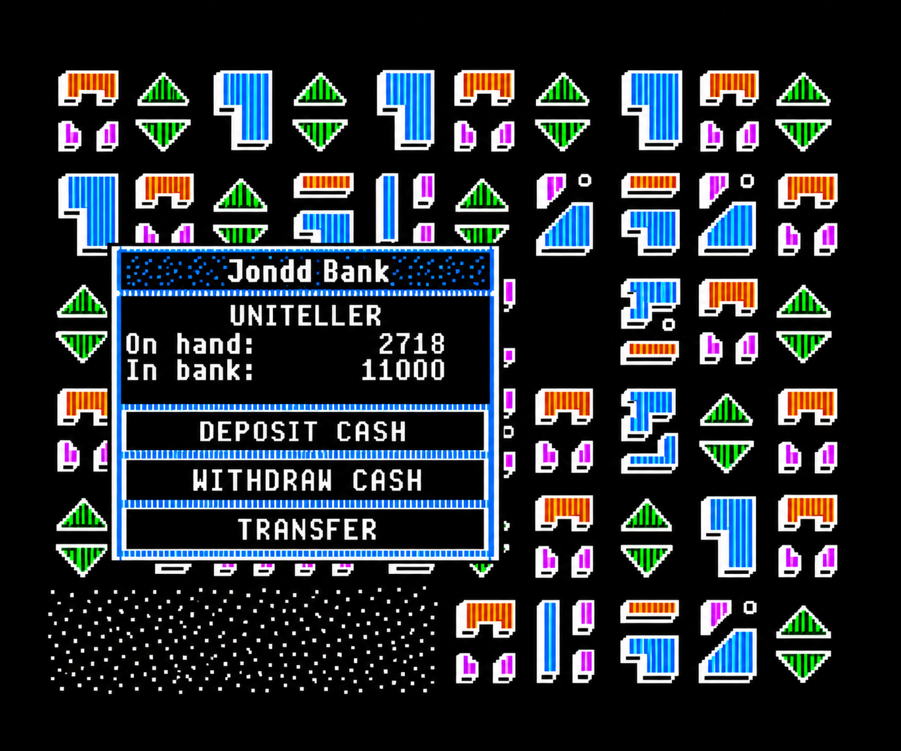
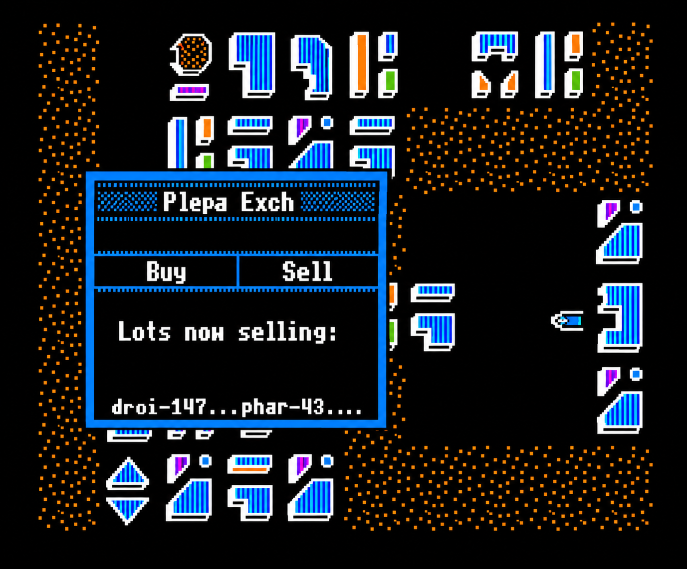

FTL Games / A ZoomAction adventure
SunDog
Frozen Legacy
The Apple II manual.
Restored text, color-painted illustrations, and reconstructed screens.


Title & credits
SunDog: Frozen Legacy™
A ZoomAction™ Adventure Game
FTL Games
7907 Ostrow, Suite F
San Diego, CA 92111
- Program design
- Bruce Webster
- Creative concept
- Bruce Webster, Wayne Holder
- Prologue
- Nancy L. Holder
- Box cover art
- David Darrow
- Manual art
- Nancy Ranscht, Sally Ranscht
- Playtesters
- Davia Browning
J. Michael Browning
Donald Geddis
Robert Trammel
and many others
Prologue
Jondd!
It was the first thing Zed saw as he regained consciousness from the hyperjump. He stared at the swirling, purple planet, tightening his hands on the arms of his chair. Jondd, where the key to his future lay waiting, where there was a slim chance to free himself from the backbreaking drudgery of the glass mines...
Across from him in the elegant ramcruiser, Magram, the lawyer assigned to his case, unbuckled his seat belt and stretched.
The scented air began to circulate again, wafting over the smooth Dunga-skin traveling seats and the convenience tables beside each of them. On Zed's lay a holocopy of his Uncle Brock's last will and testament and the Uniteller codes for his bank accounts, scattered on various star systems. These were two of the things he had inherited from the relative he had never known.
Another was the SunDog.
The lawyer draped the seat straps over the arm rests, allowing his huge belly to sag within the contours of his unisuit. Zed had disliked him on sight - but then, he had never had much use for the double-mouthed, scarlet-hued natives of the Rithan system. They plundered his home planet, controlling the mines as well as the courts, seeing to it that there was never any justice for those who risked their lives to gather playthings for the idle rich. How ironic that, of all the lawyers who worked for the firm of Spinner, Crest, and Tatuatha, a Rithan should be assigned to handle his case...
The fat, red man gave him a disdainful smile with both of his mouths, the one for chewing revealing yellow, crooked teeth; the one below it, for liquids, gummy and pink. Zed gazed at him, his face a mask, revealing nothing of the emotion that churned inside him.
Jondd. They were almost there.
“You look pale, Zed,” Magram said. “Most groundhogs - sorry, I mean, land dwellers - usually find their first hyperjump a bit harrowing. Of course, it was a longer one than usual, since our system is a long way from here. I suppose our cells flew apart for a few extra moments, but it was nothing, really. Myself, I find hypertravel...tedious.”
And I find you tedious, Zed thought. The Rithan knew full well that he was always pale, spending the daylight hours deep below the earth.
A groundhog. The lawyer had even spoken the hated word to his face. His people had always been mine workers, doomed to a brutal, and usually short, existence. By pure accident of birth, they toiled while others - those of the higher classes - enjoyed the results of the killing work that took men like Zed's father, and his father, and his, at a frighteningly early age.
But there had been an uncle - a brother his father had never mentioned. And in his lifetime, he had enjoyed the rights and privileges of those born above the surfaces of the planets. Among them, he had chosen his own name.
Which I shall do as well, Zed decided. "Zed" was assigned to me by the Union - a miner name. I'll call myself what I please to declare my freedom.
More importantly, though, his uncle had owned a ship.
“SunDog,” Zed whispered.
“Did you say something?” Magram asked, leaning forward.
Zed regarded him. Let the Rithan preen and taunt. Within hours, he would be free of him, free for the first time in his life to shape his own destiny...
As if reading his mind, Magram pressed his fingertips together and settled his chin on them. "You realize, of course, that I know you're going to fail in your mission. You haven't got a chance in a million of succeeding.”
Zed raised his chin. “Then why are you handing over my uncle’s ship to me?”
Magram laughed. "Because we have nothing to lose. For one thing, we can sell SunDog - after you've failed. Or, if you're blown up in battle or lose it to pirates, we can collect the insurance. And there’s always our famous legal system to fall back on.”
He leaned back in his chair. “It's a pity the courts require heirs to inherit everything, good and bad. Along with your uncle's worldly goods, you've inherited his debts and obligations. And Brock Dor-Ceed was very obligated to us.”
He eyed Zed. “The Society of the New Faith has already paid us tremendous sums to deliver all the materials necessary to build their new colony, and to transport their cryogenically frozen disciples there as well. ‘Cryogens,’ we call them. And we, in turn, accepted your uncle's bid on the project - the lowest, at half a million credits.”
“You're not telling me anything I don't already know,” Zed gritted.
But the Rithan would not be silenced. “Your uncle, though you've never heard of him, was quite famous - or infamous, shall we say - as a crafty trader. He had a gift for buying low and selling high. He'd purchase rare earths and sell them for engine parts, and still turn a profit to buy more fuel or ale. He could walk into a bar, find out where cadcams or droids were being sold, and fly there with pirates swooping down on all sides.”
He tapped his upper lips. “Strange, that such a good pilot would crash. His death is still a mystery to us.”
As his life was a mystery to his nephew. One day, I'll find out all I can about him, Zed vowed. But for now, he had to concentrate on fulfilling his uncle’s contract.
Otherwise, it was back to the mines for him, forever. He would have lost everything he'd gained - and more, since the law firm would attach his wages until the money they'd given his uncle was repaid. He would be nothing more than a bondsman.
It would take a long time to repay them on what a mineworker made - his lifetime, at least. And, under the law, if he ever had children, he would pass on his legacy of bitterness to them - as his uncle had passed on one of hope to him.
Magram pressed a button on the side of his convenience table. A drink pouch was dispensed. He nicked open the top and began to sip a fragrant, amber-colored liquid.
“Now, the construction of the colony is supposed to proceed in phases," he said. “They'll tell you what they want, and when. They'll order up more ‘cryogens’ when they need to thaw out more workers. The ‘cryogens,’” he added, smiling slyly, “are stored in warehouses throughout all the systems SunDog can reach. You won't have to pay for them, as you do all the other materials, but you do have to find them.”
“And the colony's on Jondd?” Zed asked tersely, fuming at the superior attitude of this fat, useless Rithan.
“Yes. Somewhere. I seem to forget the location. But a man of your abilities should have no trouble finding it.”
The message speaker glowed on. “Prepare for landing,” a metallic voice announced, and Magram pressed a reply strip to show the message had been received.
The ramcruiser descended quickly, easily, like a butterfly.
Magram sighed. “Thank goodness I'm almost finished with this.”
Zed ignored him, glancing out the window, but all he saw were the wide expanses of metal and gossamer wire of the spaceport. A few casual onlookers noted the plush craft he rode in, then went on with their work.
“It's in another section,” the lawyer drawled, as if indulging a child. “Come along, now.”
They walked through the spaceport, a robocap trailing behind with Zed's meager belongings. The cavernous hangars echoed with voices and the whine of a tablar drill, and the dull, low hum of a decelerating spacecraft that was landing nearby.
Then they turned a corner, and Zed stopped cold.
The SunDog stood before them.
She wasn't as big as he had expected, not the gleaming, modern ship he'd imagined would jettison him into a new life. Her scarred sides told tales of pirate battles and the viewer ports in the turrets bore signs of laser fire. There was a spidery lacework of patches on her starboard side and oxide around some of the fittings.
But she stood proudly in the violights. Her lines were straight and true. She was a working ship, with lots of room for cargo and fuel. The hope she represented gleamed in his heart, and he tightened his hand around his uncle’s will and Uniteller codes.
Who were you, that you did this for me? he wondered. Someday, I'll find out. But for now...
Magram sneered. “You can't even go as far as our ramcruiser in this heap. You may as well face it, miner. Accepting your inheritance can only mean failure. You wouldn't want your future family to suffer on your account, would you? Why don't you just hand SunDog over to us? I'll even give you a lift back home.”
“No,” Zed said, and for the first time he let his contempt for the Rithan show. “No. This is my ship now. I accept the terms of my uncle's will. I claim SunDog for myself.”
The Rithan chortled. “Then hop aboard. You're on your own now. Your fate lies in your hands.”
Introduction to SunDog
SunDog: Frozen Legacy™ is a science fiction adventure game set in the Jebal Imperial Protectorate, a loosely-knit federation of planets. All action takes place within the Drahew Region, a cluster of twelve systems containing 18 inhabited planets. You, the player, may travel within cities, from city to city, from planet to planet, and from system to system. Action takes place on several different scales, from sitting in the pilotage of your star freighter to driving across continents.
As the game opens, you have just inherited a one-man star freighter - the SunDog - from an uncle who died under mysterious circumstances. You also inherited the contract he signed to aid in the building of a colony for a religious group. You have three tasks to perform. First, you have to find where the colony (named “Banville”) is located. All you know is that it is somewhere on the planet Jondd. Second, you need to find, buy, and deliver all the goods needed to complete construction of the colony (your uncle was given all the money necessary). Third, you need to locate the cryogenically-frozen colonists (“cryogens”), who are located in warehouses scattered all over the Drahew Region, and transport them to the colony as they are required.
Several obstacles await you in your efforts. First, you know almost nothing about the trading business, and so you must learn what is a good deal and what isn't. Pirates will attack you with hopes of forcing you to jettison your cargo, and muggers in the city will seek to take away your cash. You'll have to buy fuel and spare parts for your ship and have repair work done when your hull is damaged. And, of course, you have to eat and sleep.
As the game starts, you have just entered the SunDog via the airlock. You have never been on a freighter before, much less flown one. They're supposed to be foolproof - and you're prepared to put that to the test. Now, if you can just figure out where to buy fuel and cargo...
Playing SunDog
To play SunDog: Frozen Legacy™, you will need the following:
- an Apple II, II+, or IIe, with at least 64K of RAM
- one disk drive
- a joystick with two buttons (button 0 and button 1)
We also recommend use of a color monitor or TV for greater enjoyment and easier playing of the game.
All you need to do to begin playing is:
- insert your SunDog™ disk into your disk drive with the label “GAME SIDE” facing up
- turn on your computer
- when you are given a choice between using the utilities and playing SunDog™, use the joystick to move the cursor over the box labelled “Play SunDog” and press button 0.
If you are playing for the first time (or starting a new game), you will find yourself on board the SunDog, standing near the airlock. If you are resuming a previously saved game, you will pick up right where you left off.
When you need to quit for a while, you can save your game by bringing up the personal status window (see page 10), selecting the floppy disc icon, and then selecting the box labelled “SAVE GAME.” This will store all of your game information back out on the game side of the disk. Then, as mentioned above, the next time that you play, you will pick up right where you left off. If, while you're playing, your computer should lose power, your game isn't completely lost. Instead, you will go back to the last point at which you saved the game.
SunDog utilities
The other side of the SunDog™ disk contains a utility package which allows you to (1) start a new game (which includes creating a new character), (2) have up to eight games in progress at the same time, and (3) end any game currently being played. You can use these utilities by either selecting the “Use Utilities” box when you boot up the “GAME SIDE” of the disk (which will then direct you to flip the disk over), or by booting up the SunDog™ disk with the label “UTILITY SIDE” facing up.
The utility package shows you eight game “slots,” each one of which can hold a game. Each slot shows the status of the game it holds. To select a slot, just use the joystick to move the cursor over that slot and press button 0. You will then have up to three choices: play that game, delete that game, or start a new game. If you don't want any of those choices, just press button 1.
If you choose to start a new game, you will get to create your character. To do this, you will (1) enter a name, and (2) set the character's attributes:
| Attribute | Code | Description |
|---|---|---|
| Intelligence | IQ | knowledge, skills, problem-solving |
| Dexterity | DX | combat and speed skills |
| Strength | ST | strength and endurance |
| Charisma | CH | ability to charm, influence, etc. |
| Luck | LK | intuition, survival skills, dumb luck |
All values start out at 30 (except for LK, which starts at 0), and all can go up to a maximum value of 100. You have a pool of 440 “attribute points” (AP's) to spend on raising your attributes. However, the cost in AP's to raise an attribute by 1 rises sharply as that attribute approaches 100. Your goal is to adjust all of the attributes until you get the balance you want. At the same time, you want to use up all of your AP's, or at least most of them (you shouldn't have more than 4 left).
Your character's attributes will affect how well you can deal with events in the game. A lucky character may find it easier to get good deals or bluff out of bad situations. However, the level you choose for an attribute will change during the game. Your luck, for example, may tend to run out if you rely on it too much. Some game situations may temporarily raise your attributes. However, with time, all attributes return to their original levels.
Joystick control

The joystick controls every action in SunDog. The keyboard is never used. The joystick controls a pointer (+) on the screen. Think of the pointer as an imaginary fingertip. Moving the pointer over an imaginary button on the screen and pressing button 0 on the joystick will “push” the button on the screen.
The pointer also guides movement. Pressing button 0 will move “you” towards the pointer.

Button 0 is the ACTION button
It causes the pointer to “press” a screen button, pick up an object, select a designation, or makes your game character “walk.”

Button 1 is the BACK UP button
Sometimes pressing a screen button will select a sub-option. Here, button 1 will go back to the previous option. If there is no option to go back to, button 1 will show your personal status and possessions.
Shipboard movement
Press button 0 to start moving towards the cursor. Hold button 0 down to continue moving. Guide your character by moving the joystick.


Ship plan
- Forward section
- Pilotage; combat status indicator; you; airlock; ship's locker; ship's stores.
- Engineering bays
- Warp drive; sub-C engine; guns; tactical; pilotage; shields.
- Cargo pod
- Self propelled, travels over land. Pod driver's station (exit); pod locker.

ZoomAction windows
When required, a ZoomAction™ window will pop up to show local detail. For example, pressing button 1 while your character is visible in the ship or on the ground will pop up the character status window. Within this window you can manipulate or examine the objects you are carrying, check the time, rest, etc. Other ZoomAction windows show the contents of lockers on the ship or let you effect repairs in SunDog's engineering bays.
Character status window


- Inventory icons
- Trash; game options; money; mouth; body; object in hand; objects carried; empty spot to carry object; compass; watch.
- Character condition
- Vigor; Rest; Health; Noursh.
- Sleep
- Press to sleep. Press button 1 to wake up.
Pilotage


- Button control panel
- Pilotage; Status; Navigate; Tactical; Distress.
- Indicators
- Combat status indicator; system status; hull damage; probability warp success; fuel level; warp charge.
- Computer auxiliary display
- The lower display area, shown with a flight plan in the original diagram.
Tactical display


- 3D radar indicator
- Left indicator is top view. Right indicator is side view.
- Shield level
- Declines with enemy hits.
- Weapon charge
- Weapons direct charged level against enemy, but must recharge after each shot.
- Controls shown
- Pilotage; Tactical; Jettison; Guns; Shields; Comm.


Ground movement

Press button 0 to walk towards pointer.

Release button 0 when near pod, ship or doorway to enter.
Buildings
There are over 50 different cities on the planets within the Drahew Region. Each city contains numerous shops, public facilities, banks, etc. You can enter any building that has a door and a ZoomAction window will pop up the interior. To leave, just walk back out the door. While inside, you can purchase items for sale, chat with the proprietor, or just hang out.
Other patrons will come and go as you conduct your business. Sometimes you will be able to speak with them...if you can find them in a conversational mood.


Encounters
Sometimes you will be able to chat with a game character through a ZoomAction dialog window. The character may be a beggar on the street, a trader, or others. You can respond to their questions or demands with push-button responses appropriate to each encounter.



Combat


Banking
Each star system in the Drahew Region has an independent banking system. Funds can be transferred to another system, but not from another system. Proceeds from the sale of goods in an exchange are deposited in the local bank where they are available for transfer or withdrawal. When transferring funds be careful to keep track of which system you transfer the money to. Also, remember to withdraw funds before leaving a system if you don't know where to transfer them.
All banking is done at automated Unitellers which are located in all cities.



Trade exchange
Cargo is bought and sold at exchanges located in each city. Price is a function of local supply and demand. Each exchange has a quote ticker which shows current trade prices. When buying goods, the purchase price is taken first from funds on deposit in the local bank and, if not enough, from cash you have on hand. When selling goods all proceeds are deposited in the local bank. Purchased goods can be stored in warehouses attached to each exchange and picked up later.


SunDog : critique française
Sundog est un jeu de rôle qui vous plongera dans un univers de science fiction. D'un oncle lointain et ignoré de [vous], mort dans des circonstances obscures, [vous] avez reçu pour héritage un vaisseau assez [perfectionné], le Sundog, et un contrat visant à [l'implantation] d'une colonie pour un groupe [religieux]. Il s'agit alors d'accomplir trois [tâches] : trouver la colonie, quelque part sur la [planète] Jondd ; puis trouver, acheter, et [amener] tout le matériel nécessaire à sa [construction], et enfin trouver les colons, nommés [« cryogènes »], qui sont dispersés dans tout [l'univers], et les ramener à la colonie. Pour cela, [votre] oncle vous a donné de l'argent. Mais tout [cela] n'ira pas sans mal : vous devez [comprendre] le commerce intersidéral, voir ce qui est [bon] à acheter pour le revendre ailleurs à bon [prix], éviter les pirates de l'espace, les gangs des [villes] voulant vous dépouiller, acheter du [carburant] pour le vaisseau, trouver à manger, [dormir].
[Le] jeu, entièrement en haute résolution [graphique], utilise un système de fenêtres vous [indiquant] à tout moment votre inventaire, vos [caractéristiques], le chargement du vaisseau, les [différents] magasins de la ville, les personnes [que] vous rencontrez... Le dialogue avec [l'ordinateur] se fait uniquement avec le joystick ou [les] paddles. La création du personnage est [assez] simple : il suffit d'entrer son nom, et de [répartir] des points dans des caractéristiques [(intelligence], dextérité, force, charisme, et [chance]).
[La] première vue du jeu présente un plan du [vaisseau]. Un petit point vous matérialise. On [se déplace] grâce au joystick. On peut ainsi [explorer] le vaisseau, chaque recoin recèle [diverses] choses : réserves de nourriture, de [médicaments], le poste de pilotage, le sas pour [l'extérieur], les machineries du vaisseau (on [peut] alors voir quelles pièces sont en panne, [les] remplacer par des raccords en attendant de racheter la pièce manquante. Cette solution de rechange diminue les capacités du vaisseau, mais lui permet tout de même de voler. Après s'être équipé avec un pistolet laser, un champs de force portatif, un peu de nourriture, et des médicaments (on ne peut porter que quatre objets) on peut alors s'aventurer au dehors.
Apparaît alors un second type de vue : la ville. On n'en voit qu'une partie : il faut se déplacer pour en découvrir le reste. On y trouve des bâtiments résidentiels, des bars, des magasins, des banques, et les Téléportations Publiques, qui vous transportent d'un coin à l'autre de la ville, contre paiement bien sûr. Dans les magasins on trouve armes, boucliers, nourriture, pièces détachées pour le vaisseau ; dans les bars on peut trouver des renseignements en allant au comptoir, ou en attendant dans des sortes de parloirs, vous pouvez rencontrer une faune digne du bar de la Guerre des Étoiles (le premier film). Ces personnages peuvent vous donner des renseignements, vous vendre ou vous acheter n'importe quoi, après avoir marchandé, raconté des histoires, des mauvais jeux de mots (en anglais, les pires)... Souvent, des gens vous abordent dans la rue, pour vous vendre des objets ou pour vous déposséder de tous vos biens. Dans ce cas, le combat s'engage, le gagnant ayant de droit de dépouiller le perdant. On s'en tire parfois, ou on en ressort blessé, et « allégé »... On peut aussi faire réparer le vaisseau, le réapprovisionner en carburant, acheter différentes marchandises pour la colonie... On peut sortir de la ville grâce au véhicule autonome du vaisseau.
Et là, troisième vue : la panète apparaît, avec montagnes, mers, plaines, et d'autres villes... Pour changer de planète, ou de système, il faut aller au poste de pilotage, choisir un système, une planète et une ville comme destination, puis décoller (l'effet graphique est assez réussi), et enfin faire le saut dans l'hyperespace.
Ce jeu est fort bien fait graphiquement, l'utilisation des fenêtres est aisée, et malgré son prix (750 francs), il est à conseiller.
Un jeu FTL Games pour Apple.
Olivier Tubach